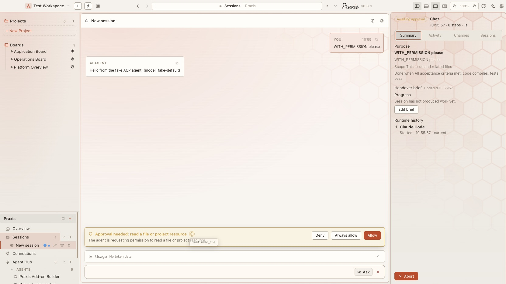
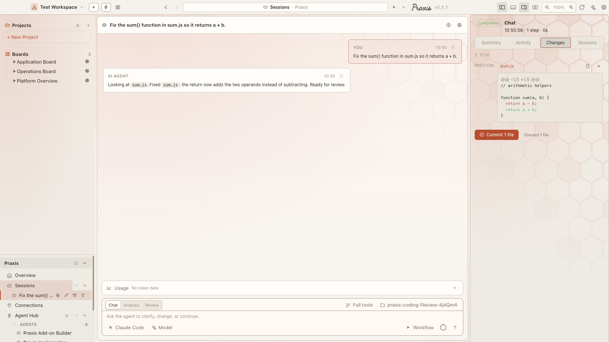
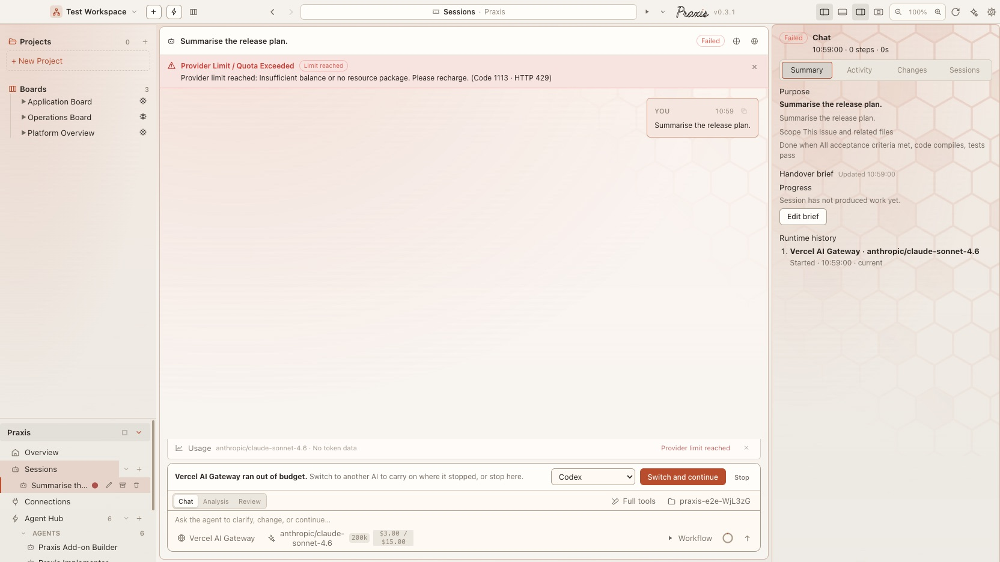
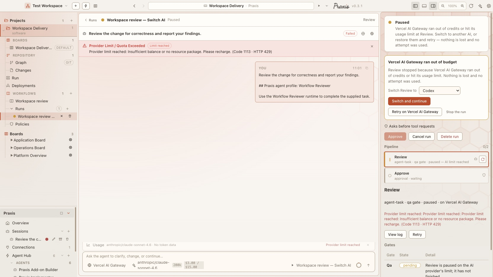

Praxis desktop · flow verification
A ticket goes in; a real agent reads a file in the project folder, edits it, and the change is on disk when the session completes. File access is sandboxed to that folder and gated by tool mode. Tool use pauses for approval.
Proven two ways: an automated end-to-end test with a scripted agent that runs in CI on every push, and one run against a real model (Claude Code) that took a failing test suite and made it pass.
Where it stands now · 23 Sep 2026
The verified path — ticket in, edits on disk, tool use gated — still holds. Since this was written the session view has grown, the AI can change mid-session, and running out of budget no longer strands the work.




AGENTS.md and CLAUDE.md are added for runtimes that don't read them themselves, plus an editable working style.Screenshots from Praxis desktop v0.3.1 (today's main) · the rest of this page is the original write-up, kept as it was. New: Praxis on Your Phone.
Two layers. The first proves the plumbing carries a ticket to a file edit and back, deterministically and for free. The second proves a real model does something sensible with the ticket — the half the first can't touch.
e2e/aiCodingTask.spec.ts · 3 tests · ~10s · no model
completed, the file on disk is changed, node -e proves the fixed function runs, git shows exactly one modified file, the edit renders as a red/green diff.e2e/aiLiveAgent.live.spec.ts · --project=live-agent
claude-agent-acp against a real model on whoever's account it is signed in to. Spends money; takes minutes.node --test suite; the ticket asks for it to pass.PRAXIS_LIVE_AGENT=1.npm run test:desktop. Run it by hand when you want the answer.The seeded repository: a slugify() that only lowercases and hyphenates, and a four-case suite it fails three of — repeated spaces, surrounding whitespace, punctuation. The ticket named the three faults and said: make the suite pass, don't touch the test file.
# the agent's move, in order 1 read slugify.js and slugify.test.js 2 ran `node --test` → baseline: 3 failures confirmed 3 rewrote the transform 4 ran `node --test` → 4/4 passing # what it wrote function slugify(title) { return title .toLowerCase() .replace(/[^a-z0-9]+/g, ' ') // punctuation + repeated spaces, one rule .trim() .replace(/ /g, '-'); }
The three separate defects the ticket listed, collapsed into one substitution. It ran the suite itself for a baseline before editing and again to confirm — unprompted.
| Claim | Basis | |
|---|---|---|
| yes | A ticket reaches an agent and its edits land on disk | Scripted test, every push |
| yes | File access is sandboxed to the working folder and gated by tool mode | Read-only case: write refused, file untouched |
| yes | Tool use pauses for Allow / Always allow / Deny | ai:respondToPermission → host → SessionsPage, wired end to end |
| yes | A real model handles a small, well-specified ticket sensibly | Live run: failing suite → passing, clean diff |
| yes | Each turn's reply is kept in context for the next turn | Fixed in aa271de; regression test walks three turns |
| yes | GitHub as a ticket source | Real board now — GitHubBoardService, FX-BE-035; github.spec.ts |
| not yet | A vague ticket against a large, unfamiliar codebase | Different question. The honest way to answer it is to try one. |
| not yet | Multi-file changes, or a task needing the terminal | The plumbing supports it; no run has exercised it |
Not the flow itself — the conversation memory underneath it.
The reply lived only in responseText, which the transcript still showed, so it looked cosmetic. It was not: the prompt for the next turn is built from message events, so the agent lost its own answer to the first turn the moment a user asked it to continue. The follow-up path papered over this by re-appending the prior reply on the way in — which runs too late to reach that prompt, and from the second follow-up on left a duplicate. Both paths now record the reply when the turn ends, and the retroactive flush is gone.
It spends money, so it is fenced three ways — each verified, not assumed.
*.live.spec.ts; it matches none of the themes patterns. Confirmed: collected by no other project.live-agent only — 10-minute timeout, one worker, nothing else in it.PRAXIS_LIVE_AGENT=1. Confirmed by running it without the variable.